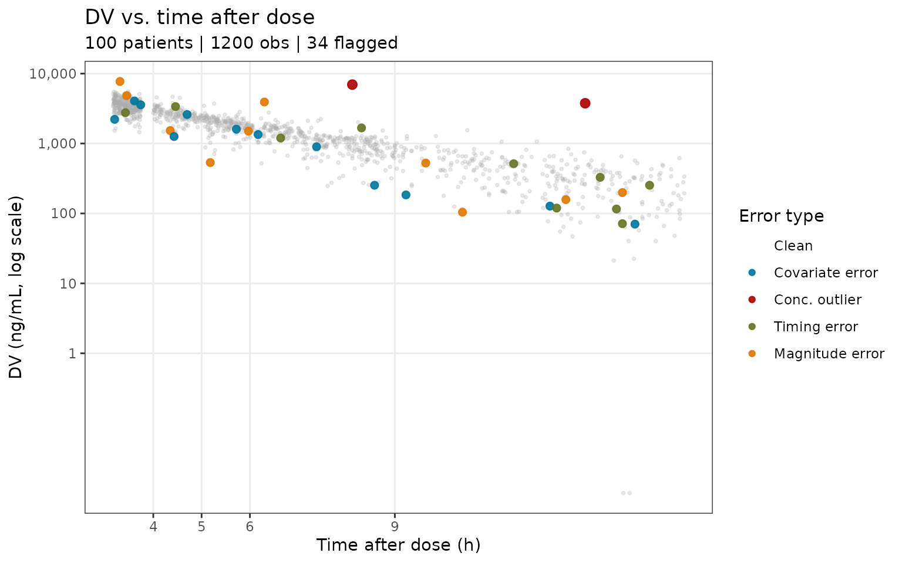
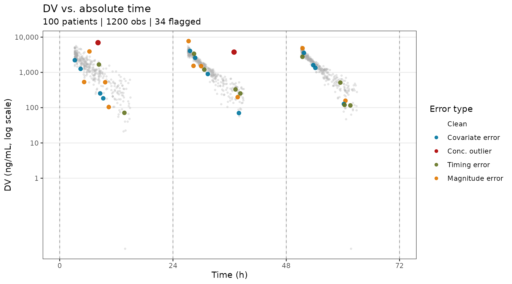
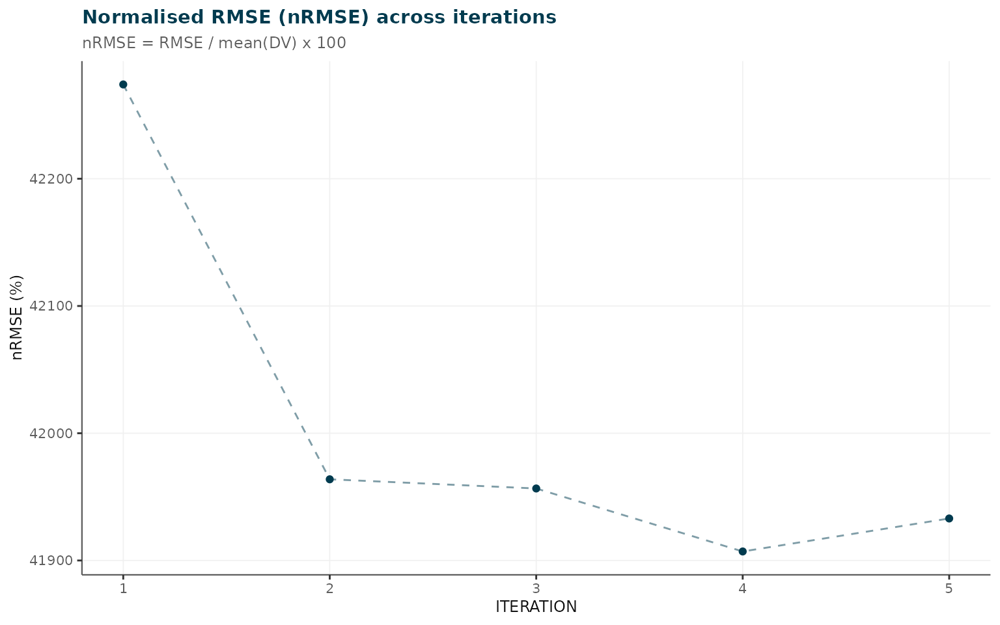
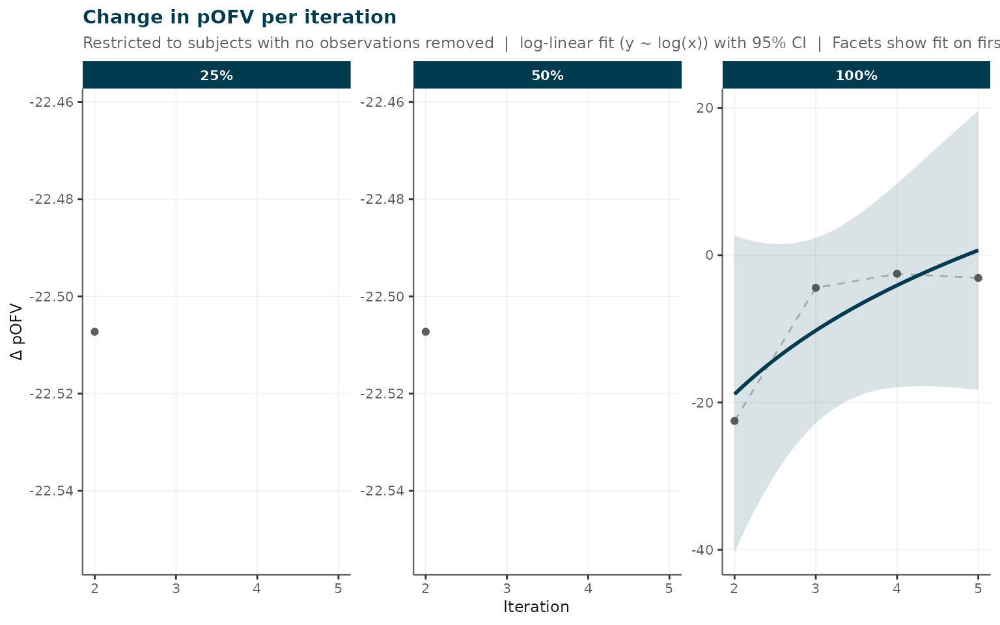

Simulated Busulfan Dataset: End-to-End irxclean Workflow
Source:vignettes/busulfan_simulation.Rmd
busulfan_simulation.RmdOverview
This vignette walks through a complete irxclean analysis
using a simulated busulfan pharmacokinetic dataset.
Busulfan is a narrow-therapeutic-index alkylating agent used in
haematopoietic stem-cell transplant conditioning; individualised dosing
based on therapeutic drug monitoring (TDM) is standard of care.
The iterative-flagging stage (Section 3) runs NONMEM when PsN is
available and caches results locally; subsequent renders load the cache.
If neither is present, a 5-iteration pre-computed result bundled in
inst/testdata/ is used as a fallback. All other steps run
live against the simulated dataset.
Dataset description
The dataset was generated with PKPDsim using the
pkbusulfanucsf2025 model package, a two-compartment IV
busulfan population PK model. The NONMEM estimation model
(pk_busulfan_ucsf_2025.mod, ADVAN3 TRANS4)
incorporates:
- Allometric fat-free mass (FFM) scaling of clearance (estimated allometric exponent) and volume
- Sex effect on volume
- Maturation function for paediatric CL
- Time-varying clearance (decreasing exponentially with time post-dose)
- Between-subject variability (IIV):
BLOCK(2)on CL and V1 (with covariance), separate diagonal term for V2 - Inter-occasion variability (IOV) on CL (CV 11.6%) and V (CV 11.2%) across 5 dosing occasions
100 patients (80 paediatric 1–18 yr, 20 adult 18–70
yr) each received 4 doses at 24-hour intervals. Doses 2–4 were adapted
via MAP Bayesian estimation
(PKPDmap::get_map_estimates()) to target a cumulative AUC
of 90 mg*h/L. Sampling occurred at 1, 2, 3, and 6 hours after the end of
the infusion (4, 5, 6, and 9 hours post-dose) for the first three doses
(12 observations per patient, 1200 total).
Proportional (6.9%) and additive (28.6 ng/mL) residual error was added to all simulated concentrations.
Intentional errors were then introduced and tracked
via FLAG (integer bitmask) and FLAG_LABEL
(character description) columns:
| FLAG bit | Error type | Count |
|---|---|---|
| 1 | Covariate weight: decimal-place shift (e.g. 27.0 kg recorded as 2.7 kg) | 1 patient |
| 2 | Concentration IQR outlier (>3*IQR above Q3 per TAD bin) | 2 observations |
| 4 | Timing error (+/- 5, 10, 30, or 60 minutes from true time) | 10 observations |
| 8 | Concentration magnitude error (multipliers 0.01–2.0x) | 10 observations |
The full simulation script is in
data-raw/simulate_busulfan.R.
How the dataset was generated
The dataset was simulated using PKPDsim (>= 1.5.0)
and PKPDmap (>= 1.1.6) with the two-compartment busulfan
PK model described above. One hundred patients were generated: 80
paediatric (age 1–18 years, weight drawn from a log-normal distribution
centred on an age-based mean) and 20 adult (age 18–70 years, weight
~N(72, 16) kg). Between-subject variability was sampled from the 3 x 3
IIV omega matrix (CL, V1, V2), and inter-occasion variability was
applied independently for each of the four 24-hour dosing occasions.
Each patient received four once-daily 3-hour intravenous infusions.
After each dose, four TDM samples were collected at 4, 5, 6, and 9 hours
post-dose (i.e. 1, 2, 3, and 6 hours after the end of the infusion).
Doses 2–4 were adapted using MAP Bayesian estimation (via
PKPDmap) targeting a cumulative AUC of 90,000 ng/mLh
(22,500 ng/mLh per dose).
The full simulation script, including covariate generation, IOV
sampling, MAP dose adaptation, and deliberate error injection, is
available in data-raw/simulate_busulfan.R.
1. Load the dataset
# Load the bundled simulated dataset
dat <- read.csv(system.file("extdata", "busulfan_sim.csv", package = "irxclean"))
cat(sprintf(
"Patients: %d | Total rows: %d | Observations: %d\n",
length(unique(dat$ID)), nrow(dat), sum(dat$EVID == 0)
))
#> Patients: 100 | Total rows: 1600 | Observations: 1200
head(dat[dat$ID == 1, ], 6)
#> ID TIME AMT RATE DV MDV EVID CMT AGE WT HT SEX FLAG
#> 1 1 0.00 125 41.66667 0.0000 1 1 1 13.5 39.3 151 1 0
#> 2 1 3.61 0 0.00000 2841.5556 0 0 1 13.5 39.3 151 1 0
#> 3 1 4.27 0 0.00000 2232.0319 0 0 1 13.5 39.3 151 1 0
#> 4 1 7.62 0 0.00000 1206.1735 0 0 1 13.5 39.3 151 1 0
#> 5 1 13.66 0 0.00000 336.4764 0 0 1 13.5 39.3 151 1 0
#> 6 1 24.00 140 46.66667 0.0000 1 1 1 13.5 39.3 151 1 0
#> FLAG_LABEL
#> 1
#> 2
#> 3
#> 4
#> 5
#> 6
# Errors introduced in the simulation
err_obs <- dat[
dat$FLAG > 0 & dat$EVID == 0,
c("ID", "TIME", "DV", "FLAG", "FLAG_LABEL")
]
cat("Flagged observations:\n")
#> Flagged observations:
print(err_obs[order(err_obs$FLAG, err_obs$ID), ])
#> ID TIME DV FLAG FLAG_LABEL
#> 1202 76 3.20000 2216.8093 1 covariate_weight
#> 1203 76 4.43000 1259.3036 1 covariate_weight
#> 1204 76 8.58000 252.9989 1 covariate_weight
#> 1205 76 9.23000 184.1580 1 covariate_weight
#> 1207 76 27.61000 4062.5074 1 covariate_weight
#> 1208 76 28.70000 2597.1720 1 covariate_weight
#> 1209 76 31.38000 899.3427 1 covariate_weight
#> 1210 76 37.97000 70.3334 1 covariate_weight
#> 1212 76 51.74000 3574.7893 1 covariate_weight
#> 1213 76 53.72000 1604.0418 1 covariate_weight
#> 1214 76 54.17000 1344.3210 1 covariate_weight
#> 1215 76 60.21000 127.1840 1 covariate_weight
#> 548 35 8.12000 6960.6921 2 conc_iqr_outlier
#> 1466 92 36.94000 3766.0920 2 conc_iqr_outlier
#> 223 14 61.58667 115.7197 4 timing_10min
#> 357 23 13.71000 71.4174 4 timing_30min
#> 762 48 37.25000 328.3775 4 timing_30min
#> 841 53 30.63667 1199.1323 4 timing_5min
#> 1114 70 38.27333 253.0690 4 timing_10min
#> 1239 78 28.46000 3375.0725 4 timing_60min
#> 1279 80 60.35000 119.3422 4 timing_60min
#> 1372 86 51.42333 2761.5047 4 timing_5min
#> 1412 89 8.31000 1671.2129 4 timing_30min
#> 1503 94 59.46000 514.1154 4 timing_60min
#> 179 12 5.18000 534.3144 8 magnitude_0.25x
#> 200 13 28.35000 1532.0964 8 magnitude_0.60x
#> 277 18 10.40000 104.0891 8 magnitude_0.40x
#> 287 18 60.54000 157.6999 8 magnitude_1.05x
#> 378 24 37.71000 198.8850 8 magnitude_0.95x
#> 612 39 6.30000 3924.9722 8 magnitude_1.40x
#> 620 39 51.45000 4853.0208 8 magnitude_1.60x
#> 821 52 9.64000 526.2569 8 magnitude_1.20x
#> 855 54 27.31000 7712.7429 8 magnitude_1.75x
#> 1224 77 29.97000 1504.1938 8 magnitude_0.80x1b. Explore: concentration vs. time-after-dose
ggplot2::ggplot() +
.pk_layers("TAD", "Time after dose (h)", c(4, 5, 6, 9)) +
ggplot2::labs(
title = "DV vs. time after dose",
subtitle = sprintf("%d patients | %d obs | %d flagged",
dplyr::n_distinct(obs$ID), nrow(obs),
sum(obs$error_type != "Clean"))
)
DV vs. time after dose (TAD). Observations overlay across all four dosing occasions. Sampling at 4, 5, 6, and 9 h post-dose (1, 2, 3, 6 h after end of 3-h infusion).
dose_times <- unique(dat$TIME[dat$EVID == 1])
ggplot2::ggplot() +
.pk_layers("TIME", "Time (h)", c(0, 24, 48, 72, 81)) +
ggplot2::geom_vline(xintercept = dose_times, linetype = "dashed",
colour = "#999999", linewidth = 0.4) +
ggplot2::labs(
title = "DV vs. absolute time",
subtitle = sprintf("%d patients | %d obs | %d flagged",
dplyr::n_distinct(obs$ID), nrow(obs),
sum(obs$error_type != "Clean"))
)
DV vs. absolute time. Vertical dashed lines mark the four dose times (0, 24, 48, 72 h). The within-occasion PK shape is visible at each occasion; the covariate-error patient shows a shifted curve across all occasions.
2. Gross data quality assessment
Before running NONMEM, assess_data_quality() performs
rapid model-independent screening: covariate outliers, concentration
elevations, TAD-bin outliers, and missing data.
qc <- assess_data_quality(
data = dat,
covariate_cols = c("AGE", "WT", "HT"),
categorical_cols = "SEX",
iqr_multiplier = 3,
conc_increase_threshold = 1.5,
conc_floor = 1 # busulfan LLOQ ~1 ng/mL; skip ratio check below this
)
#> Warning in data.frame(ID = out_rows[[id_col]], COVARIATE = col, VALUE =
#> out_rows[[col]], : row names were found from a short variable and have been
#> discarded
#> TAD column not found - computing from dose records (EVID==1 / AMT>0).
#>
#> irxclean :: Gross data quality assessment
#> --------------------------------------------------
#> Subjects : 100
#> Observations: 1200
#> Covariate outliers flagged : 8 subjects
#> Concentration TAD-bin outliers : 6 observations
#> Concentration elevation flags : 3 events
#> Columns with missing values : 0
cat("Covariate outliers (note weight decimal error):\n")
#> Covariate outliers (note weight decimal error):
print(qc$covariate_outliers)
#> ID COVARIATE VALUE LOWER_BOUND UPPER_BOUND IQR_MULT
#> AGE.1 82 AGE 53 0 46.375 3
#> AGE.2 85 AGE 67 0 46.375 3
#> AGE.3 86 AGE 66 0 46.375 3
#> AGE.4 88 AGE 64 0 46.375 3
#> AGE.5 92 AGE 53 0 46.375 3
#> AGE.6 93 AGE 60 0 46.375 3
#> AGE.7 95 AGE 53 0 46.375 3
#> AGE.8 99 AGE 68 0 46.375 3
cat("Concentration TAD-bin outliers:\n")
#> Concentration TAD-bin outliers:
print(qc$concentration_bin_outliers)
#> ID TIME TAD TAD_BIN DV LOWER_BOUND UPPER_BOUND N_IN_BIN
#> 25% 54 27.31 3.31 3.0 7712.743 217.5834 7206.199 169
#> 25%1 39 4.55 4.55 4.5 4493.502 1036.9012 3826.869 67
#> 25%2 39 6.30 6.30 6.0 3924.972 -126.1907 3144.562 47
#> 25%3 35 8.12 8.12 8.0 6960.692 -397.2630 2245.738 62
#> 25%4 79 10.50 10.50 10.5 1552.228 -166.0281 1173.790 30
#> 25%5 92 36.94 12.94 12.5 3766.092 -468.3749 1026.890 32
n_missing <- qc$missing_summary[qc$missing_summary$n_missing > 0, ]
if (nrow(n_missing) == 0) {
cat("Missing data: none\n")
} else {
print(n_missing)
}
#> Missing data: noneThe gross screen flags the two IQR-outlier concentrations and the weight decimal error.
3. Iterative observation flagging (NONMEM required)
remove_erroneous_obs() runs NONMEM iteratively, removing
the observation with the largest |CWRES| at each step and refitting.
Results are cached to busulfan_results.RDS in the vignette
working directory so subsequent renders skip the NONMEM run. If neither
a cache file nor a PsN/NONMEM installation is available, the 5-iteration
testdata bundled with the package is used as a fallback.
cache_file <- "busulfan_results.RDS"
if (file.exists(cache_file)) {
results <- readRDS(cache_file)
message("Loaded cached results from ", cache_file)
} else if (nzchar(Sys.which("execute"))) {
file.copy(
system.file("extdata", "pk_busulfan_ucsf_2025.mod", package = "irxclean"),
"pk_busulfan_ucsf_2025.mod", overwrite = TRUE
)
file.copy(
system.file("extdata", "busulfan_sim.csv", package = "irxclean"),
"busulfan_sim.csv", overwrite = TRUE
)
results <- remove_erroneous_obs(
dat = "busulfan_sim",
mod = "pk_busulfan_ucsf_2025",
run_id = "busulfan_removal",
n = 20
)
saveRDS(results, cache_file)
message("Results saved to ", cache_file)
} else {
message("NONMEM/PsN not found and no cache -- loading package testdata.")
results <- readRDS(system.file("testdata", "rem_test_results.RDS",
package = "irxclean"))
}
#> NONMEM/PsN not found and no cache -- loading package testdata.
cat("Iterations completed:", nrow(results$rmse), "\n")
#> Iterations completed: 5
cat("Flagged observations (ranked by |CWRES|):\n")
#> Flagged observations (ranked by |CWRES|):
print(results$rem[, c("ID", "TIME", "DV", "CWRES")])
#> ID TIME DV CWRES
#> 1 1051 28.2170 1444 -7.9412
#> 2 279 3.0000 988 5.4563
#> 3 1548 30.8330 637 -4.6804
#> 4 527 29.8330 1432 -4.5255
#> 5 33 3.2166 2090 -4.49704. Removal metrics
plot_removal_metrics() visualises how model fit
statistics evolve as successive observations are removed.
plot_removal_metrics(results, metric = "rmse")
RMSE across iterations
plot_removal_metrics(results, metric = "pOFV")
#> `geom_line()`: Each group consists of only one observation.
#> ℹ Do you need to adjust the group aesthetic?
#> `geom_line()`: Each group consists of only one observation.
#> ℹ Do you need to adjust the group aesthetic?
pOFV across iterations
plot_removal_metrics(results, metric = "thetas")
Theta estimates across iterations
5. Model stability check
check_model_stability() compares parameter estimates at
each iteration against the baseline and flags iterations where any theta
drifts beyond a threshold percentage.
stability <- check_model_stability(results, threshold_pct = 20)
#>
#> irxclean :: Model stability check (threshold: 20%)
#> --------------------------------------------------
#> Parameters assessed : 17 (fixed excluded)
#> stable : 10
#> drifted : 6
#> unstable : 1
#> Unstable: ADD error
#> nRMSE trend: decreasing
print(stability)
#> irxclean model stability (threshold: 20%)
#> stable : 10 parameter(s)
#> drifted : 6 parameter(s)
#> unstable : 1 parameter(s)
#>
#> Parameter summary:
#> PARAMETER RSE_PCT N_REVERSALS CV_LATE_PCT DRIFT_PCT STATUS
#> TH_CL 3.161 2 2.17e-01 7.004 stable
#> TH_V 0.989 3 1.97e-01 0.899 stable
#> MAT-MAG 14.145 1 1.76e+00 23.199 drifted
#> K_MAT 5.688 2 4.51e-01 14.244 drifted
#> PROP error 7.143 0 2.90e+00 16.976 drifted
#> ADD error 175.361 3 3.46e+03 268.871 unstable
#> DROP 7.458 2 3.22e+00 22.378 drifted
#> SHAPE 18.645 2 6.66e+00 36.079 drifted
#> allo ffm exp 1.742 1 1.02e+00 2.136 stable
#> Sex effect on V 0.559 0 2.37e-02 1.191 stable
#> Q 4.525 3 1.97e+00 7.710 stable
#> V2 2.101 3 4.00e-01 0.623 stable
#> IIV CL 0.432 2 1.31e-01 0.137 stable
#> IIV V1 2.419 1 1.69e+00 5.788 stable
#> IOV CL 0.636 3 5.51e-01 0.121 stable
#> IOV V1 3.202 3 2.83e+00 0.937 stable
#> IIV V2 16.136 2 8.12e+00 19.579 drifted
#>
#> nRMSE trend: decreasing6. Demographic comparison
plot_demographic_comparison() tests whether subjects
with flagged observations differ demographically from the rest of the
cohort.
plot_demographic_comparison(
data = dat,
results = results,
continuous_cols = c("AGE", "WT", "HT"),
categorical_cols = "SEX"
)
#> Warning in stats::chisq.test(contingency, correct = FALSE): Chi-squared
#> approximation may be incorrect
#> TAD column not found - computed from dose records (EVID == 1 / AMT > 0).
#> irxclean demographic comparison (5 subjects with removed obs)
#>
#> Statistical tests:
#> covariate test p_value significant
#> AGE Wilcoxon rank-sum 0.6154182 FALSE
#> WT Wilcoxon rank-sum 0.6524481 FALSE
#> HT Wilcoxon rank-sum 0.7030824 FALSE
#> SEX Chi-squared 0.3342398 FALSE7. Apply final exclusions
After reviewing the ranked flagged observations,
remove_observations_from_data() applies the user-approved
exclusions to produce the analysis-ready dataset.
cleaned <- remove_observations_from_data(
data = dat,
results = results,
n_to_remove = 3
)
write.csv(cleaned, "busulfan_cleaned.csv", row.names = FALSE)
cat("Cleaned dataset:", nrow(cleaned), "rows\n")8. Generate report
A single call to generate_report() compiles an HTML
summary of all findings.
generate_report(
results = results,
data = dat,
quality_results = qc,
output_file = "busulfan_irxclean_report.html",
continuous_cov_cols = c("AGE", "WT", "HT"),
categorical_cov_cols = "SEX"
)Session information
sessionInfo()
#> R version 4.5.3 (2026-03-11)
#> Platform: x86_64-pc-linux-gnu
#> Running under: Ubuntu 24.04.4 LTS
#>
#> Matrix products: default
#> BLAS: /usr/lib/x86_64-linux-gnu/openblas-pthread/libblas.so.3
#> LAPACK: /usr/lib/x86_64-linux-gnu/openblas-pthread/libopenblasp-r0.3.26.so; LAPACK version 3.12.0
#>
#> locale:
#> [1] LC_CTYPE=C.UTF-8 LC_NUMERIC=C LC_TIME=C.UTF-8
#> [4] LC_COLLATE=C.UTF-8 LC_MONETARY=C.UTF-8 LC_MESSAGES=C.UTF-8
#> [7] LC_PAPER=C.UTF-8 LC_NAME=C LC_ADDRESS=C
#> [10] LC_TELEPHONE=C LC_MEASUREMENT=C.UTF-8 LC_IDENTIFICATION=C
#>
#> time zone: UTC
#> tzcode source: system (glibc)
#>
#> attached base packages:
#> [1] stats graphics grDevices utils datasets methods base
#>
#> other attached packages:
#> [1] irxclean_0.1.0
#>
#> loaded via a namespace (and not attached):
#> [1] Matrix_1.7-4 gtable_0.3.6 jsonlite_2.0.0 dplyr_1.2.1
#> [5] compiler_4.5.3 tidyselect_1.2.1 stringr_1.6.0 tidyr_1.3.2
#> [9] jquerylib_0.1.4 splines_4.5.3 systemfonts_1.3.2 scales_1.4.0
#> [13] textshaping_1.0.5 yaml_2.3.12 fastmap_1.2.0 lattice_0.22-9
#> [17] ggplot2_4.0.2 R6_2.6.1 labeling_0.4.3 vpc_1.2.4
#> [21] generics_0.1.4 patchwork_1.3.2 knitr_1.51 tibble_3.3.1
#> [25] desc_1.4.3 bslib_0.10.0 pillar_1.11.1 RColorBrewer_1.1-3
#> [29] rlang_1.2.0 stringi_1.8.7 cachem_1.1.0 xfun_0.57
#> [33] fs_2.0.1 sass_0.4.10 S7_0.2.1 cli_3.6.6
#> [37] mgcv_1.9-4 withr_3.0.2 pkgdown_2.2.0 magrittr_2.0.5
#> [41] digest_0.6.39 grid_4.5.3 nlme_3.1-168 lifecycle_1.0.5
#> [45] vctrs_0.7.3 evaluate_1.0.5 glue_1.8.0 farver_2.1.2
#> [49] ragg_1.5.2 purrr_1.2.2 rmarkdown_2.31 tools_4.5.3
#> [53] pkgconfig_2.0.3 htmltools_0.5.9